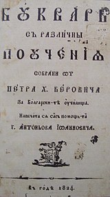

Петър Хаджи Берович е български лекар, стопански и просветен деец и дарител. Учен-енциклопедист,
педагог, философ и естественик. Автор на Рибния буквар (1824) – първия български буквар.
Петър Берон е роден през 1799 г. в Котел. За кратко живее в Брашов. Учи в местно килийно училище и в
елино-българско училище на даскал Андон Хаджи Кринчу, а след завършването му, започва работа. На
21-годишна възраст отива в Букурещ, където учи в гръцката Княжеска академия, а по-късно с помощ от
сънародници – в различни университети в Европа. Учи медицина в Хайделберг и Мюнхен. В Мюнхен слуша
лекциите на Фридрих Шелинг и на Лоренц Окен. През 1831 г. защитава докторат и се връща в Румъния. Автор
е на около 20 научни труда. Владее девет езика и живее в Париж, Берлин, Лондон, Виена, Прага и Атина.
Дипломиран лекар, отдава се и на научни занимания.
През 1824 г. с помощта на просветителя Антон Йованович, издава „Буквар с различни поучения“,
или т.нар. „Рибен буквар“. Наречен е така заради изобразените в края на книгата кит и
делфин. Това е първият български
буквар изобщо, и е издаден от Петър Берон в Брашов.

Петър Берон дарява средства за подкрепа на много български училища. Той учи и работи активно
в Сорбоната (университет в Париж), където е известен като един гениален учен, но беден
преподавател. Французите са запленени от този академичен гений, предлагайки му да приеме
френско гражданство под името „Пиер Барон“. Той отказва да приеме гражданство, оставайки си
поданик на султана. По време на своето пребиваване в Сорбоната живее на последния етаж на
една бедна сграда, където на места покривът е срутен и се вижда небето. Получава добра
заплата, която влага за експерименти в лабораторията по химия. Продължава да живее в нищета.